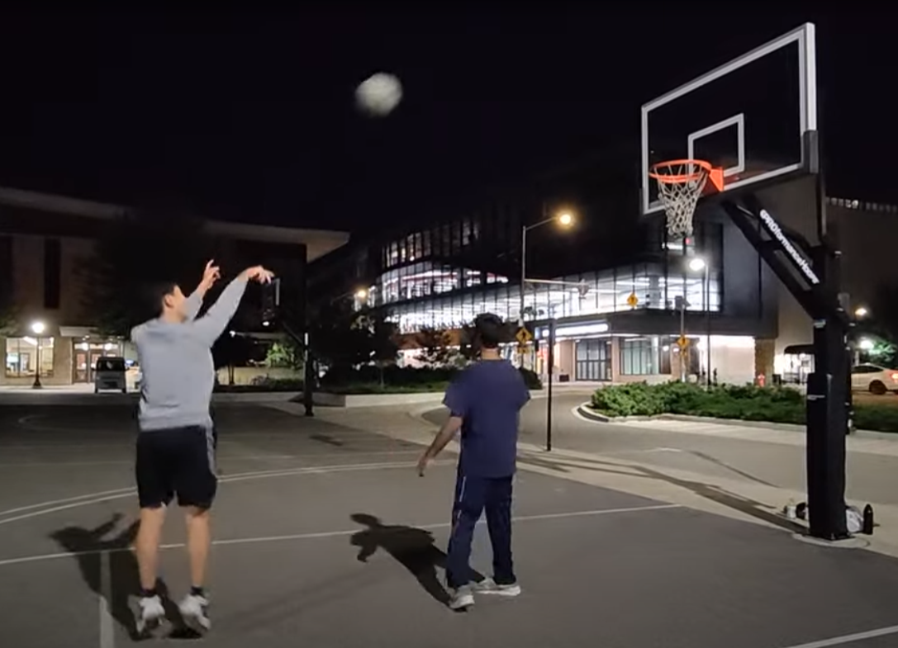
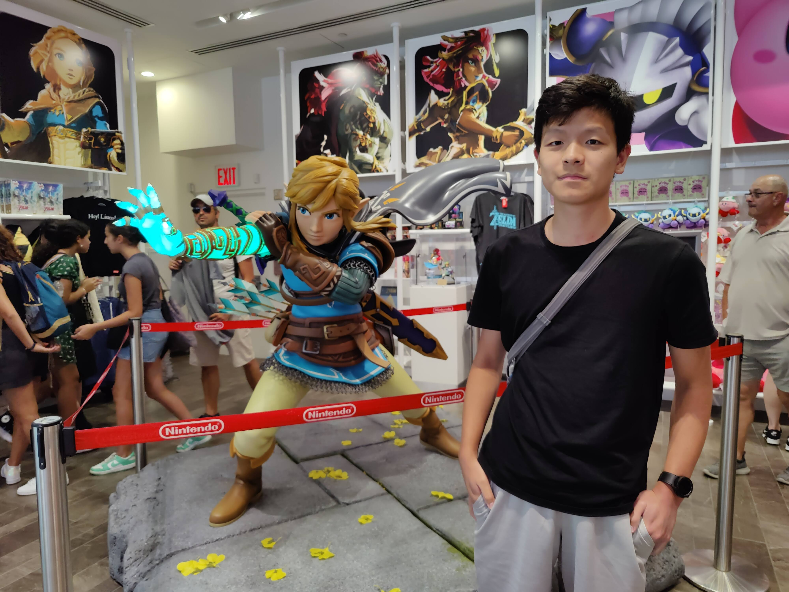

Basketball is one of my favorite ways to stay active and unwind. I enjoy playing pick-up games with friends and working on improving my skills. It's a great way to combine physical activity with teamwork and strategy.
I'm an avid gamer and particularly enjoy Nintendo games. From classic titles to the latest releases, gaming has always been a passion of mine. It also inspires my interest in game development and interactive systems.
When I'm not coding or playing sports, I enjoy:
These hobbies help me maintain a balanced lifestyle and often provide inspiration for my technical projects.